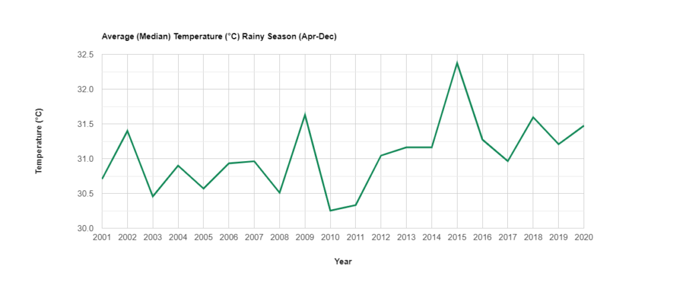
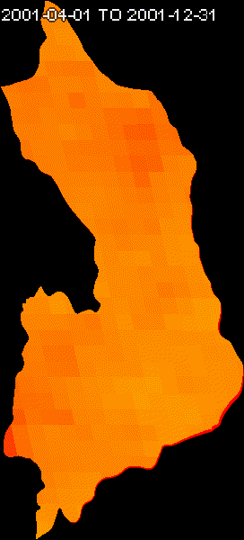
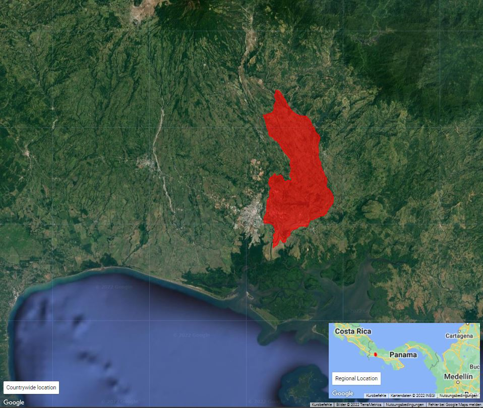

Measuring land surface temperature with satellite imagery
Introduction
In our previous post, we looked at the changes in the Cochea River watershed, and learned the capabilities of the Google Earth Engine to provide us with a visualization of these changes through satellite imagery. In this post, we are going to measure the changes in land temperature in this area in degrees Celsius, using the MODIS datasets, adding a line by line explanation of the code we are going to run to do this exercise.
Step by step code explanation
The first thing that we need to do is to set our region of interest. We use the same Feature Collection from the shapefile of the province of Chiriquí from our previous post.
First we filter our Feature collection using the method ee.Filter.inList which find all the records in a feature collection which values for a certain column ('NAME_3' in this case), match a declared list ('districts'). We will work with the municipalities of Bijagual, Cochea and Las Lomas.
Because there are one than two districs in different provices named 'Bijagual', we apply an additional filter to keep all records for which the province 'Chiriquí' is found (filtering by the column 'NAME_1').
We add the layer, by applying an union algorithm, so the vector won't have any boundaries between the selected districts.
Now we'll try to center our may view. First we filter our feature collection, and keep only the 'Bijagual' district. Now we get the x, and y coordinate from this district and store it in the centroid_cochea_coor variable, by using the series of methods geometry, centroid, coordinates and getInfo. By array subscript we get the x and y variable. Finally we center the Map view using the x, and y coordinates.
We set the visualization parameters to map values from 0 to a maximum of 40 for degrees Celsius, and pick up a color palette suitable to the range of values we want to represent.
For this analysis we will divide a year into two seasons, the dry season and the rainy season. This is due to the seasonal pattern of the year that predominates in the tropics, which lacks the four seasons of the year that exist in other latitudes of the planet. The temporal analysis will be made for a period of 20 years, counting 2001 as year 1, until 2020.
We declare two variables ("DrySeasonMedianCollection" and "WetSeasonMedianCollection"), which will contain a collection of MODIS Land Surface images. There is no use (or it is not very recommended) of for loops to perform filtering and application of algorithms on a collection, so the body inside the "ee.ImageCollection" with which we create the two variables mentioned above seems a bit counterintuitive. Google Earth Engine uses an approach more inclined to functional programming than imperative or object-based programming, mapping functions to collections that can be vector data called "Feature Collections", or Images called "ImageCollections" (it can also be applied to another type of Collections, Lists, but these are the most interesting cases for geospatial data analyzers). What is done is to create a list with ee.List.sequence taking the first year "2001" and the last year 2020, and on that list we are going to apply the function "createDrySeasonMedianComposite", and "createWetSeasonMedianComposite" respectively.
The two functions below have a similar purpose, and the only thing that differentiates them is the time period used to filter the images. They use as argument "year", and based on that a startDate and endDate are created to delimit a period of time. Then a variable "description" is created, which is basically a data type "string" that comes from the concatenation of "StartDate" + " TO " + EndDate. The function returns an "ImageCollection", to which the "filterBounds" method is applied to obtain the images that intersect our region of interest (ROI). Then we apply to our "ImageCollection" the "filterDate" method, to obtain the images of the period we declared at the beginning, we select the layer "LST_Day_1km" and to that layer (raster layer) we multiply it by 0.02 which is the scale factor that comes in the MODIS products user guide for the transformation of digital numbers (DN) to Kelvin degrees, and finally we subtract the resulting values by 273.15 to transform the Kelvin degrees to Celcius which are the ones we will be working with. As you can see the same logic is observed in both functions, what changes are the time periods.
To the new imageCollection we apply the method "toBands" to convert it from its "collection" state to a "multi-band" image, using after the method "select" and a regular expression to get the images that come with a numerical prefix, starting by 0, e.g. ("0_LST_Day_1km", "1_LST_Day_1km" ...) .
Now we create a dictionary called "TempInfo" which contains as key values the names of the layers in the multi-band images "DrySeasonMedianMultiBandImg" and "WetSeasonMedianMultiBandImg", and the value is a dictionary with ordinal values and the corresponding year for each band.
Now we are going to declare two lists to obtain the values and the dictionary keys that will be used to define the axis values in the graphs.
To unify the geometries of the different districts, we are going to join them using the "union" method in the "FeatureCollection".
Now we are going to define two graphs to print on our console. One will be created for the dry season, and the other for the rainy season. For this we use the ui.Chart.image object and apply the "regions" method. In this method we have to define the multiband image whose values we want to plot. Then the region in which we want to calculate the average temperature values, and a reducer, which in this case will be "mean" because we want to calculate the average of pixels in our study area for the given time period. For the seriesProperty parameter we set it to 'label', and define that the xLabels parameter will take the values from the xPropVals list. The following are parameters for the elements found in the graph we are going to produce. First we define that it will be a line chart by setting the value of 'LineChart' using the 'setChartType' method. Among the options we define the title, the name of the X axis (with the font type parameters), and the ticks for the horizontal axis will be the years, taken from the xPropLabels list. For the vertical axis, we will give it the title Temperature (°C), define the parameters for the font. Finally we define the color that our line will take in the graph and the thickness of it. We apply the print method to see our graph in the console.

Average Median Temperature (°C) for the Dry Season (Jan-Mar) measured from the MODIS sensor in 20 years period

Average Median Temperature (°C) for the Wet Season (Apr-Dec) measured from the MODIS sensor in 20 years period
The following lines prepare an annotated collection (with a text showing the time period to which the layer belongs). This annotated collection will be displayed in the console as a GIF, which can be saved on your PC in GIF format.

Rainy Season (Apr-Dec) MODIS Composites (20 years)

Dry Season (Jan-Mar) MODIS Composites (20 years)
Finally, we present our area of interest. For this we create a map of the regional location of our area of interest and another with the location within the country. This is done with the help of the ui.Map object. Note how at the end we present the map with the location within the country with satellite images as background.

Regional and country-wide overview of our Area of Interest (AOI)
Google Earth Engine provides scientists, as well as anyone with a google account, the opportunity to perform spatial analysis, which can help us to assess the state of natural resources, demographic evolution and other geospatial phenomena.
Conclusion
In this blog post, we were able to see how to create a time series graph of temperature data from the MODIS Sensor for a geographic region that has undergone major geomorphological changes in recent years. This analysis could be done for a period of 20 years. In addition, these composites could be added in GIF format, and a regional and country level location map could also be added.